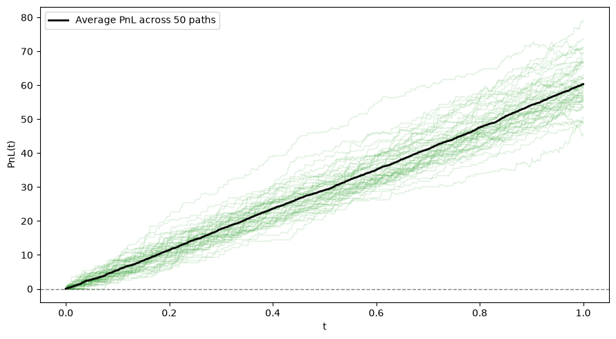

Two random ingredients drive the market maker’s problem:
When do orders arrive? — a Poisson process, N(t)
How does the fair price move? — Brownian motion, W(t)
We also saw, with real SPY data, that both idealizations are imperfect: order flow is bursty and time-varying, and price moves continuously but jaggedly. Still, they’re the right starting point — tractable models we now extend into a full market-making analysis.
What’s Still Missing
Module 7 treated “an order arrives” as a black box. It isn’t one: where do orders actually get routed, matched, and priced? Real order flow is shaped by exchange rules, rebates, and routing incentives, not just an arrival rate \lambda.
Today fills in that institutional plumbing — the market microstructure CS 3 assumes you understand.
Part 2: US Equities Market Infrastructure
Why Isn’t There Just “The Stock Market”?
There is no single place SPY trades. U.S. equity trading is legally required to be fragmented and competing:
16 registered national securities exchanges (NYSE, Nasdaq, Cboe’s four venues, IEX, MEMX, MIAX Pearl, LTSE, …), plus dozens of Alternative Trading Systems (ATSs), i.e. “dark pools”
Regulation NMS (2005) requires that a trade execute at the best displayed price available anywhere (the Order Protection Rule) — no exchange can trade through a better price posted on a competitor
Result: exchanges must be electronically linked and constantly race each other on price, speed, and fees to attract order flow
This is the environment CS 3’s market maker operates in — not one order book, but a network of competing, interlinked ones.
Real Data: How Fragmented Is SPY Trading, Really?
scripts/20260401.txt — the same file from Module 7 — tags every trade print with the venue that reported it. Let’s look at the actual mix for one day of SPY:
import numpy as npimport pandas as pdimport matplotlib.pyplot as pltexchanges = []withopen("../../scripts/20260401.txt") as f:for line in f:if"last="notin line:continue i = line.index("exchange=") +9 exchanges.append(line[i:].strip().rstrip(")"))counts = pd.Series(exchanges).value_counts()print(counts)fig, ax = plt.subplots(figsize=(10, 5))counts.plot(kind="bar", ax=ax, color="C0")ax.set_ylabel("trade prints, 2026-04-01")ax.set_title("SPY trade prints by reporting venue")plt.tight_layout()plt.show()
Real trades in a single, heavily-traded ETF, printed across a dozen-plus distinct venues in one day. UNKNOWN and FINRA are trades that never touched a lit exchange book at all — more on that shortly.
Lit exchanges (NYSE, Nasdaq, Cboe BZX/BYX/EDGX/EDGA, IEX, MEMX, MIAX Pearl, …) post public, displayed bid/ask quotes. These quotes are what combine to form the NBBO (National Best Bid and Offer).
Dark pools / ATSs and off-exchange internalizers take orders without displaying a quote. A trade happens, then gets reported after the fact to a FINRA Trade Reporting Facility (TRF) — this is the FINRA tag in the data above.
Roughly 40–50% of U.S. equity volume trades off-exchange in a given period. Dark venues exist because large or informed traders don’t want to reveal size and intent by resting a visible order.
For a market maker quoting on a lit exchange, this matters: displayed liquidity is only part of the picture, and a meaningful share of flow never has a chance to interact with your quote at all.
Price-Time Priority: How a Limit Order Book Matches Trades
Within a single exchange’s order book, resting orders are ranked by two rules, applied in order:
Time priority — among orders at the same price, first-in-first-out (FIFO) by arrival time
Implication: two market makers quoting the identical price are not equally likely to get filled. The one who arrived first is at the front of the queue and gets executed first. This is why speed and queue position — not just where you quote — determine realized fill rates, and why the fill-rate functions \lambda_{\text{buy}}(\cdot), \lambda_{\text{sell}}(\cdot) we’ll keep using implicitly bake in “you got to the front of the queue.”
Exception worth knowing: IEX deliberately adds a 350-microsecond “speed bump” to every incoming order, specifically to blunt the advantage of the fastest participants. It’s a design choice, not an accident — evidence that queue position and speed are seen as a real economic advantage worth regulating around.
Market Data Feeds: How Much of the Book Can You See?
Price-time priority only matters to you insofar as your data lets you observe it. Exchanges and resellers sell several tiers of market data, each revealing progressively more of the book — and costing progressively more:
Feed
Also called
What it shows
Level 1
Top of book
Best bid/ask price and size (the NBBO), plus last trade — nothing behind the touch
Level 2
Market by price (MBP)
Every resting price level and the aggregated size at each, but not the individual orders behind it
Level 3
Market by order (MBO)
The full order book: every individual resting order, its size, and its exact queue position at each price level
Only MBO/Level 3 actually lets you observe time priority directly — it’s the sole feed where “who’s first in the queue at this price” is a visible fact rather than an inference. It’s also the most expensive and highest-bandwidth product on the market, for the same reason direct feeds beat the SIP: more (and faster) information costs money.
Where our data sits: the SPY file we’ve been using all module (bid=, ask=, bid_size=, ask_size=, last=) is Level 1 — top-of-book only. We can see that the touch has 320 shares bid, but not whose 320 shares, or in what order they’ll fill. That’s a real limitation worth remembering when building CS 3’s simulator: the fill-rate functions \lambda_{\text{buy}}(\cdot), \lambda_{\text{sell}}(\cdot) have to model queue-position effects that MBO data would let you observe directly.
Maker-Taker: The Rebate Model
Exchanges don’t just match orders — they charge for the privilege, and the pricing is asymmetric:
Takers (orders that execute immediately against a resting quote — “aggressive” orders) pay a fee, e.g. roughly $0.0030/share
Makers (resting limit orders that get executed against — “liquidity providers”) earn a rebate, e.g. roughly $0.0020–0.0028/share
This is the maker-taker model, and it’s why posting passive quotes is attractive beyond just capturing the spread. Some venues invert this (pay the taker, charge the maker) to attract a different mix of order flow.
not just the quoted half-spread \delta from the model — rebates are real, per-share revenue on every passive fill.
What Makes Order Flow “Toxic”?
A liquidity provider’s real enemy isn’t the bid-ask spread being too thin — it’s adverse selection: getting picked off by a counterparty who knows (or can predict) that the price is about to move against the position you just took on.
Toxic flow: trades that tend to be followed by an adverse price move for whoever provided liquidity. If you’re consistently long right before the price drops, or short right before it rises, the flow you’re filling is toxic — someone on the other side had an edge.
Uninformed / benign flow: trades uncorrelated with the price’s next move. Filling these is close to “free money” — you collect the spread with no systematic loss afterward.
This is exactly the adverse selection cost term in the edge equation above: it’s the average post-trade price drift, signed against the liquidity provider, weighted by how often it happens.
Why retail flow is prized: a retail investor buying 10 shares of SPY for a brokerage account is very unlikely to be acting on short-lived information that moves the price against the fill a moment later. An institutional order working a large position, or a fast proprietary trading firm’s order, is far more likely to be — so wholesalers and market makers price (and compete for) flow differently based on how toxic it tends to be.
Payment for Order Flow (PFOF)
Retail brokers (Robinhood, Schwab, …) mostly do not send your market order to a lit exchange. Instead:
The broker routes your order to a wholesaler — a market-making firm like Citadel Securities, Virtu, or Susquehanna
The wholesaler pays the broker for that order flow (this payment is the PFOF)
The wholesaler typically internalizes the trade — fills it directly, often with a small amount of price improvement over the NBBO, rather than routing to an exchange at all
Why is retail flow worth paying for? Per the previous slide, it’s about as non-toxic as order flow gets — low adverse selection means the wholesaler can internalize it profitably and still offer the retail trader a bit of price improvement.
Don’t confuse this with maker-taker rebates: PFOF is a payment from broker to wholesaler for order flow; rebates are payments from exchange to liquidity provider for resting orders. They’re two separate revenue channels stacked on top of each other, and PFOF is the more politically controversial of the two (ongoing SEC scrutiny over the broker’s conflict of interest in choosing where to route your order).
Getting One Consolidated Price: The SIP
With 16+ lit venues each publishing their own quotes, who computes the single “best bid and offer” you see on a screen or news ticker?
The SIP (Securities Information Processor) — operated under the CTA/UTP plans — collects quotes from every lit exchange and disseminates the consolidated NBBO
The catch: the SIP has always run slower than each exchange’s own direct proprietary feed. Direct feeds are faster (and cost extra) precisely because firms are willing to pay for a head start
Even after the 2020s SIP modernization narrowed this considerably, a firm paying for colocated direct feeds still sees exchange-level price changes measurably before the consolidated SIP tape updates
This latency gap is the source of the “latency arbitrage” critique of HFT: a fast firm with direct feeds can, in principle, trade against a slower participant who is still looking at a now-stale SIP-based NBBO. It’s also the direct motivation for IEX’s speed bump from a few slides ago.
Arbitrage in a Fragmented Market
Fragmentation (16+ separately-operated books) and latency (different participants see price changes at different times) together create several distinct, fleeting arbitrage opportunities — all of which get competed away in microseconds by whoever is fastest:
Latency / SIP arbitrage (previous slide): trade against a stale consolidated NBBO before it catches up to what direct feeds already show.
Cross-venue arbitrage: the same security, quoted on two different exchanges, briefly shows inconsistent prices because a quote update propagates to one venue before another. A firm watching both can buy where it’s momentarily cheap and sell where it’s momentarily rich.
Locked/crossed markets: propagation delay can transiently produce a bid on one venue equal to (locked) or above (crossed) the ask on another — a state the rules say shouldn’t persist, but which exists for microseconds before it’s arbitraged or corrected.
ETF/basket arbitrage (different flavor, slower): SPY tracks a basket of 500 stocks plus futures on that basket. If SPY’s price drifts from the fair value implied by the futures or the underlying basket, authorized participants can arbitrage the two back into line — this operates on a slightly longer timescale (milliseconds to seconds) than pure cross-venue quote arbitrage.
The common thread: none of these is really “predicting the market.” They’re all forms of enforcing consistency — between venues, between a consolidated feed and its faster inputs, or between a derivative and its underlying — and speed is what lets a firm capture the gap before it closes on its own.
Anchoring the Time Scales
Everything above happens at wildly different clock speeds. Rough orders of magnitude:
Event
Typical timescale
Speed of light, one-way, within the same datacenter (colocation)
tens to hundreds of nanoseconds
Exchange matching engine processes one order
microseconds
Colocated direct-feed one-way latency
low single-digit microseconds
Speed of light, one-way, NY-area to Chicago (~700 miles) — the physical floor, not achievable in practice
~3.8 ms
SIP consolidated NBBO update latency
hundreds of microseconds to low milliseconds
A human noticing a quote change on a screen
~1 second
Trade settlement (trade date to final settlement, “T+1”)
1 business day
Light in a vacuum covers about 1 foot per nanosecond; in fiber (slowed to roughly two-thirds c) it’s closer to 5 microseconds per kilometer. That’s why NY-to-Chicago round trips — the route linking equity/options venues to CME futures — can never beat about 8 ms round-trip over any real fiber path, no matter how much money is spent: it’s a hard lower bound set by physics, not engineering. (This exact constraint is why firms paid to build microwave and laser links between NY and Chicago — air is closer to a vacuum than glass fiber is, so a “slower medium, shorter path” swap can still buy back a couple of milliseconds. It’s also why colocation — renting rack space inside the exchange’s own datacenter — exists at all: the only way to beat this floor is to make the physical distance nearly zero.) Every latency number above it in the table is real engineering trying to approach a limit it can never cross.
The case study lives in the milliseconds-to-seconds band — far below settlement and human-decision timescales, but well above the microsecond electronics layer. This is exactly why Module 7 reached for continuous-time tools (Poisson arrivals, Brownian motion) instead of once-a-day models: at this timescale, “once a day” throws away almost everything that matters.
Why This Matters for CS 3
Market structure concept
Shows up in the case study as…
Fragmentation (16+ venues)
The exchange field in the data; “the market” is really many linked books
Price-time priority
Why fill rates depend on quote distance and implicitly on queue position
Maker-taker rebates
An extra, per-share revenue term beyond the quoted spread
PFOF / wholesaler internalization
Some retail flow never reaches a lit book at all — it’s filled off-exchange
SIP vs. direct feeds
Why “the price” used for backtesting/analysis needs a specific, stated source
None of this replaces the modeling tools from Module 7 — it’s the institutional context that makes the model’s assumptions (arrival rates, fill probabilities, a well-defined midprice) meaningful rather than arbitrary.
Part 3: Putting It Together — A Preview of CS 3
The Avellaneda-Stoikov Model
Following Avellaneda & Stoikov (2008), with midprice s, inventory q, time-to-horizon \tau:
\text{reservation price: } r = s - q\gamma\sigma^2\tau, \qquad
\text{optimal half-spread: } \delta = \frac{1}{\gamma}\log\left(1+\frac{\gamma}{k}\right) + \frac{1}{2}\gamma\sigma^2\tau
Quotes are \text{bid} = r - \delta, \text{ask} = r + \delta. The reservation price is an inventory skew: as q grows, r shifts below s, making the bid less attractive (harder to buy more) and the ask more attractive (easier to sell) — the market maker leans against its own position. Left unmanaged, inventory that fills roughly symmetrically just drifts like a random walk toward whatever hard risk limit is in place; this skew is what keeps it from doing that. This is a preview: a full derivation and justification of why this particular skew stabilizes inventory is part of what the case study asks you to investigate.
Simulating the Full Model
def simulate_as(rng, T=1.0, dt=0.001, sigma=2.0, gamma=0.1, k=1.5, A=140.0, s0=100.0, max_inv=15): N =int(T / dt) times = np.arange(N +1) * dt mid, inv, cash, pnl = (np.zeros(N +1) for _ inrange(4)) mid[0] = s0for n inrange(N): tau = T - times[n] s, q = mid[n], inv[n] r = s - q * gamma * sigma**2* tau delta = (1/ gamma) * np.log(1+ gamma / k) +0.5* gamma * sigma**2* tau bid, ask = r - delta, r + delta p_bid =1- np.exp(-A * np.exp(-k * (s - bid)) * dt) p_ask =1- np.exp(-A * np.exp(-k * (ask - s)) * dt) inv[n +1], cash[n +1] = q, cash[n]if q < max_inv and rng.uniform() < p_bid: inv[n +1] +=1 cash[n +1] -= bidif q >-max_inv and rng.uniform() < p_ask: inv[n +1] -=1 cash[n +1] += ask mid[n +1] = s + sigma * rng.normal(0, np.sqrt(dt)) pnl[n +1] = cash[n +1] + inv[n +1] * mid[n +1]return times, mid, inv, pnlrng3 = np.random.default_rng(5005)times, mid, inv, pnl = simulate_as(rng3)fig, axes = plt.subplots(3, 1, figsize=(10, 8), sharex=True)axes[0].plot(times, mid, color="C0")axes[0].set_ylabel("mid(t)")axes[0].set_title("One Simulated Trading Day Under the AS Model")axes[1].plot(times, inv, color="C1")axes[1].set_ylabel("q(t)")axes[2].plot(times, pnl, color="C2")axes[2].set_ylabel("PnL(t)")axes[2].set_xlabel("t")plt.tight_layout()plt.show()
Individual paths (thin lines) are noisy, fanning out further from each other as time goes on — but the average PnL trends steadily upward (thick black line): the model’s captured spread and rebates show up as expected profit, on average, across paths. Any single path, though, is still at the mercy of unmanaged inventory swings — which is exactly why keeping inventory near zero via the skew matters as much as the spread itself.
Average PnL Across Simulated Paths

mean final PnL = 60.32, std = 6.95
From Simulation to a Real Backtest
The simulation above draws fills from a model. backtest/ in this module’s folder runs a real market-making strategy against the real SPY tape from scripts/20260401.txt, event by event, with a proper fake broker instead of a fill-probability formula:
fake_broker.py — parses the tape into two kinds of incoming messages, QuoteUpdate (a new best bid/ask) and TradePrint (an executed trade), and holds our resting limit orders. On every trade print it checks whether the trade would have crossed one of our orders and, if so, produces an OrderFilled message. Zero latency: our orders and cancels take effect instantly, but the broker only ever looks at ticks already read — no peeking ahead.
main.py — a plain for loop. Each iteration calls one function, handle_next_tick(broker, book), which (a) reads every message the broker produced since the last call and updates our book (best bid/ask, inventory, cash), then (b) cancels our old quotes and sends new ones resting just behind the touch — bid below the best bid, ask above the best ask — shifted by inventory, the same skew idea as r = s - q\gamma\sigma^2\tau, without the calculus. Resting behind the touch instead of improving it is what lets the strategy earn the spread rather than pay for fill priority. Quotes only rest during regular trading hours, 9:30–4:00; outside that window we just watch the tape.
--plot shows mark-to-market PnL over the course of the trading day.
Reading the Simulation Through Today’s Lens
Quantity
What it is
Tool from this module
The venues, priority rules, and fees behind every fill
Institutional plumbing, not randomness
Market microstructure (Part 2)
Rebates, fees, PFOF, toxicity
Real revenue/cost terms beyond the quoted spread
Market microstructure (Part 2)
r, \delta (reservation price, half-spread)
Turns raw quoting into an inventory-aware policy
Previewed today; developed fully in CS 3
The market maker’s edge isn’t just “the spread” — it’s the spread plus rebates, minus fees and adverse selection, earned within the rules of a fragmented, priority-driven market. Today’s tools let us reason about that institutional layer precisely; CS 3 is where you build the full inventory-aware policy on top of it.
What We Learned: Module 8 Summary
Concept
Role
Fragmentation / Reg NMS
Why “the market” is really 16+ linked venues, not one book
Lit exchanges vs. dark pools
Displayed quotes vs. off-exchange internalized/negotiated trades
Price-time priority
Within a price level, first-in-first-out; speed buys queue position
Market data tiers (L1/L2/L3, MBP/MBO)
How much of the book — and whose orders — you can actually observe
Maker-taker rebates
A real, per-share revenue stream on top of the quoted spread
Order flow toxicity / adverse selection
Why not all liquidity-taking flow is equally profitable to fill
Payment for order flow
Why much retail flow never reaches a lit exchange at all
SIP vs. direct feeds, cross-venue arbitrage
Why a “single” NBBO still has a latency gap between participants
Speed-of-light latency floor
Why some latency numbers are physics, not engineering
Looking Ahead: Module 9
Next module: Itô’s lemma — the calculus rule for transforming functions of Brownian motion, which lets us go from “the stock price has no predictable drift” to pricing derivatives written on it. This is the bridge from CS 3 (market making) to CS 4: Options Trading, where the tools from this whole continuous-time unit — Poisson processes, Brownian motion, and now Itô’s lemma — come together in the Black-Scholes derivation.
References
Avellaneda, M. & Stoikov, S. (2008). High-frequency trading in a limit order book. Quantitative Finance, 8(3), 217–224.
Baxter, M. & Rennie, A. (1996). Financial Calculus: An Introduction to Derivative Pricing. Cambridge University Press.
Harris, L. (2003). Trading and Exchanges: Market Microstructure for Practitioners. Oxford University Press.
U.S. Securities and Exchange Commission. Regulation NMS, 17 CFR Part 242.